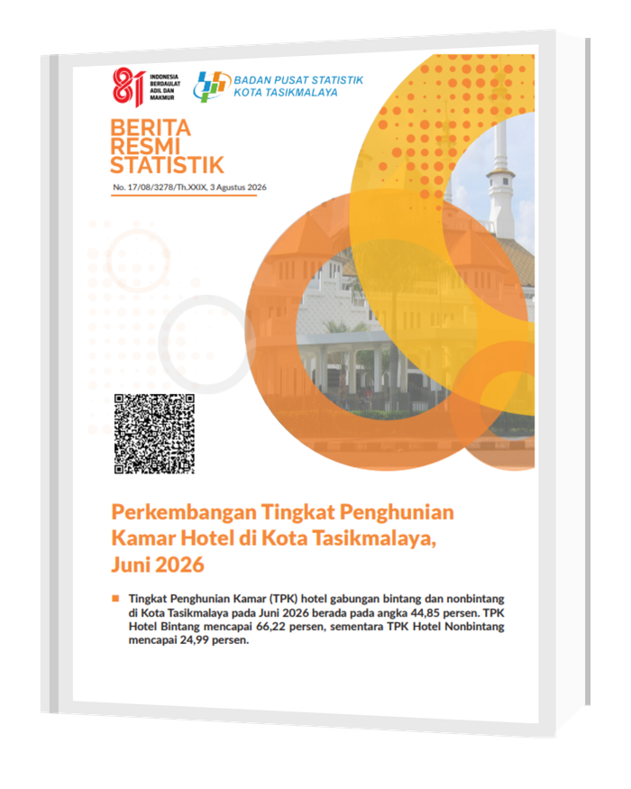

Selamat Datang, di
Dashboard Otomatisasi dan Peramalan
BRS-TPK Hotel Kota Tasikmalaya
BRS (Berita Resmi Statistik) adalah publikasi resmi yang diterbitkan Badan Pusat Statistik (BPS) berisi angka dan analisis statistik terkini mengenai suatu bidang tertentu, disusun secara ringkas, mudah dipahami, dan dapat dipertanggungjawabkan.
TPK (Tingkat Penghunian Kamar) adalah persentase jumlah kamar hotel yang terisi/terjual dibandingkan dengan total kamar yang tersedia pada suatu periode.
BRS Tingkat Penghunian Kamar Hotel Kota Tasikmalaya diterbitkan setiap bulan di website resmi BPS, memuat perkembangan TPK hotel bintang dan nonbintang dibandingkan bulan sebelumnya dan bulan yang sama tahun lalu, lengkap dengan data rata-rata lama menginap tamu asing maupun Indonesia.

iPanel Admin
1) Isi / tempel data tren TPK bulanan (13 bulan terakhir) dan data rata-rata lama menginap (3 periode) di bawah ini - data bisa ditempel langsung dari Excel. 2) Klik "Pratinjau Draf" untuk melihat dulu hasilnya (hanya kamu yang lihat). 3) Kalau sudah pas, klik "Terbitkan Edisi Ini" supaya edisi bulan ini resmi tampil di halaman Penampil BRS dan bisa dilihat semua orang.
2Terbitkan BRS Bulan Berikutnya
Setiap bulan, jendela data bergeser satu bulan ke depan - misalnya bulan ini Juni 2025–Juni 2026, bulan depan otomatis jadi Juli 2025–Juli 2026, dan seterusnya. Klik tombol ini untuk otomatis: membuang bulan tertua dari tabel tren, menambah 1 baris bulan baru di akhir, dan menggeser periode di tabel lama-menginap (bulan rilis sekarang jadi "bulan lalu"). Setelah digeser, kamu tinggal isi angka bulan yang baru saja.
1Data Tren Bulanan TPK HotelLogin untuk mengedit
Kolom: Bulan, TPK Bintang (%), TPK NonBintang (%), TPK Gabungan (%). Baris pertama & dua baris terakhir otomatis dipakai sebagai 3 periode pembanding di Tabel 1. Data awal bersumber dari TPK.xlsx (s.d. Mei 2026) - untuk bulan berikutnya, klik “Impor File Excel” dan unggah file .xlsx terbaru dengan format serupa, atau geser periode secara manual lewat kartu di atas.
Salin 4 kolom dari Excel (Bulan / Bintang / NonBintang / Gabungan) - boleh dengan atau tanpa baris judul - lalu tempel di sini:
| No | Bulan | TPK Bintang (%) | TPK NonBintang (%) | TPK Gabungan (%) |
|---|
2Data Tren Bulanan Rata-rata Lama Menginap Tamu (RLMT)Login untuk mengedit
13 bulan terakhir, per bulan diisi 9 angka (Bintang & NonBintang & Total × Asing/Indonesia/Total). Baris pertama & dua baris terakhir otomatis dipakai sebagai 3 periode pembanding di Tabel 2 & narasi - sama seperti Tabel 1. Isi “-” bila data tidak tersedia.
Salin langsung dari Excel persis seperti pola aslinya: baris judul bulan (opsional), baris Asing/Nusantara/Gabungan (opsional), lalu 3 baris angka berurutan Bintang, NonBintang, Total/Gabungan - masing-masing 3 kolom (Asing, Indonesia, Total) per bulan. Kalau baris judul bulan tidak disertakan, kolom akan dicocokkan urut dengan bulan yang sudah ada di tabel.
| Bulan | Bintang | NonBintang | Total | |||||||
|---|---|---|---|---|---|---|---|---|---|---|
| Asing | Indonesia | Total | Asing | Indonesia | Total | Asing | Indonesia | Total | ||
"Pratinjau Draf" hanya menampilkan perubahan untukmu di halaman Web Penampil BRS. Klik "Terbitkan Edisi Ini" supaya edisi bulan ini resmi tampil dan bisa dipilih semua orang lewat dropdown di Penampil BRS.
Perkembangan Tingkat Penghunian Kamar Hotel di Kota Tasikmalaya
iRingkasan
A. Tingkat Penghunian Kamar HotelLogin untuk mengedit
| Klasifikasi Hotel | TPK (%) | Perubahan (poin) | Perubahan (poin) | ||
|---|---|---|---|---|---|
iNarasi - Rata-rata Lama Menginap TamuLogin untuk mengedit
| Jenis Hotel | Asing | Indonesia | Total | ||||||
|---|---|---|---|---|---|---|---|---|---|
iNarasi - Lama Menginap Asing & IndonesiaLogin untuk mengedit
Ingin menambah / mengubah data?
Masuk ke Panel Admin untuk mengedit data bulanan dan menerbitkan edisi BRS baru, atau lihat proyeksi TPK ke beberapa bulan ke depan di halaman Peramalan.
iPeramalan Tingkat Penghunian Kamar Hotel
Model Holt-Winters Exponential Smoothing atas data TPK historis (dihitung ulang otomatis mengikuti data terbaru di Panel Admin), dengan catatan pengaruh periode Idul Fitri. Angka peramalan disertai rentang ketidakpastian (kira-kira 90%) yang melebar semakin jauh ke depan.
TPK Gabungan Terakhir
39,61%
Mei 2026
Peramalan Juni 2026
38,43%
−1,18 poin dari Mei
Akurasi Model (MAPE)
9,14%
Holt-Winters, kategori Gabungan
Efek Idul Fitri
−6,43poin
rata-rata penurunan TPK
1Data Aktual vs Peramalan
Oktober 2023–Mei 2026 data aktual, Juni–November 2026 hasil peramalan Holt-Winters. Pilih kategori hotel di bawah.
2Cari TPK per Bulan
Pilih bulan (Okt 2023–Nov 2026) untuk melihat angka TPK-nya langsung - data aktual atau hasil peramalan.
Bintang
NonBintang
Gabungan
3Akurasi Model
Diuji pada holdout beberapa bulan terakhir menggunakan model Holt-Winters.
| Kategori | RMSE | MAPE |
|---|---|---|
| Hotel Bintang | 4,57 | 7,35% |
| Hotel NonBintang | 5,62 | 23,56% |
| Gabungan | 4,07 | 9,14% |
4Hasil Peramalan 6 Bulan ke Depan
Juni–November 2026, model Holt-Winters yang dilatih ulang pada seluruh data historis.
| Bulan | Bintang | NonBintang | Gabungan |
|---|
Catatan Periode Idul Fitri
TPK justru menurun saat Idul Fitri, diduga karena Tasikmalaya adalah kota tujuan mudik—masyarakat menginap di rumah keluarga, bukan hotel. Karena tanggal Idul Fitri bergeser tiap tahun (kalender Hijriah), efek ini tidak dimasukkan ke model peramalan utama (data historisnya baru 4 kejadian), dan disajikan sebagai temuan terpisah.
Data: rekap TPK BPS Kota Tasikmalaya, Oktober 2023–Mei 2026, dikonsolidasikan dari 30+ sheet bulanan. Model: Holt-Winters Exponential Smoothing (tren dan musiman aditif, periode 12 bulan), dievaluasi melalui holdout 6 bulan.